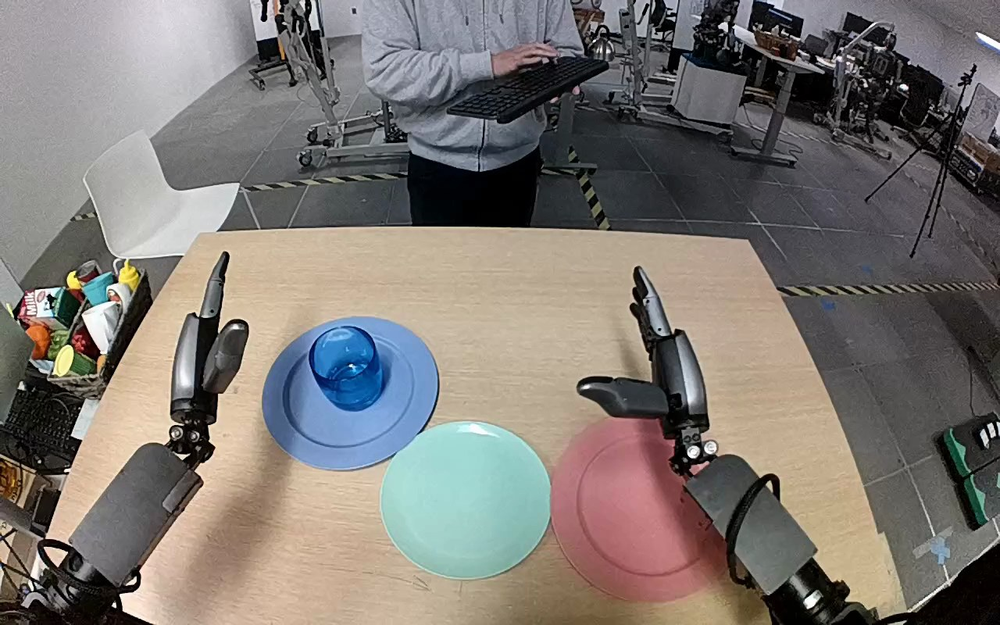

NVIDIA GR1 · 51
Video 51

Visual review action_review.json
{
"prompt_protocol": "humanoid_action_v1",
"prompt_provenance": "visually_authored_from_video_and_initial_frame",
"reviewed_contact_sheets": [
"sheet_001.jpg"
],
"inspected_frame_stride": 2,
"inspected_sampled_frame_count": 60,
"initial_scene": "Robot-centered view over a table: translucent blue tumbler upright on blue plate, empty teal plate nearer the middle, pink plate at right. Both hands initially open; a person beyond the table operates a keyboard but does not participate in the object manipulation.",
"observed_sequence": [
{
"start_frame": 0,
"end_frame": 23,
"description": "Both hands remain open; blue glass stands on blue plate and teal plate is empty.",
"confidence": "high"
},
{
"start_frame": 24,
"end_frame": 63,
"description": "Left arm advances toward the glass and positions its open fingers around opposite sides, adjusting the hand while the glass remains on the blue plate. Right hand stays open at the pink plate.",
"confidence": "high"
},
{
"start_frame": 64,
"end_frame": 77,
"description": "Left fingers close around the sides of the glass and establish a grasp; the glass remains near its original position during the final grasp adjustment.",
"confidence": "high"
},
{
"start_frame": 78,
"end_frame": 93,
"description": "Left hand lifts the glass visibly clear of the blue plate, holding it upright.",
"confidence": "high"
},
{
"start_frame": 94,
"end_frame": 109,
"description": "Left arm transports the held glass from blue plate toward teal plate and lowers it over the teal plate.",
"confidence": "high"
},
{
"start_frame": 110,
"end_frame": 119,
"description": "Glass is lowered upright onto teal plate; left fingers open and separate from its sides by final frame. The glass remains standing on the teal plate, with the left hand still beside it.",
"confidence": "high"
}
],
"arm_hand_roles": {
"left": "Active hand approaches, grasps, lifts, transports, lowers and releases the blue glass onto the teal plate.",
"right": "Remains open above/beside the pink plate throughout; does not touch or support the glass.",
"coordination": "Single-hand manipulation; no hand-to-hand transfer or assistance from the person."
},
"anatomical_side_evidence": {
"description": "The viewpoint looks forward between the paired robot forearms entering from the lower corners. The active screen-left hand has its thumb facing inward toward the center, mirrored by the screen-right hand inward-facing thumb; this paired hand geometry and robot-centered viewing convention supports anatomical left for the active arm and right for the idle arm. Upper arms and shoulder attachments are outside the view.",
"confidence": "moderate",
"uncertainty": "Shoulder attachments are not directly visible; anatomical assignment is supported by the paired forearm/hand orientation rather than image position alone."
},
"evidence_frame_indices": [
0,
42,
64,
82,
94,
110,
119
],
"selected_execution_status": "success",
"terminal_state": "Blue glass stands upright on teal plate. Blue plate is empty. Left hand has opened beside the glass without a complete withdrawal; right hand remains open near the pink plate.",
"uncertainties": [
"Upper-arm/shoulder attachment is outside the robot-centered view; anatomical left is inferred from paired forearm and inward-thumb geometry. Exact material of the translucent blue drinking vessel cannot be proven visually."
],
"annotation_discrepancies": [],
"video_id": "51",
"dataset": "NVIDIA_GR1_100",
"dedicated_review_agent": "review_gr1_51",
"review_source_video": "NVIDIA_GR1_100/51/original/original.mp4",
"source_frame_count": 120,
"source_fps": 20.0,
"native_detail_frames": [
42,
64,
82,
94,
110,
119
],
"world_model_prompt": "The robot's left hand closes around the translucent blue glass on the blue plate, lifts it clear, and carries it to the teal plate. It lowers the glass upright onto the teal plate and opens its fingers beside it, leaving the glass standing there. Keep the camera fixed; preserve robot geometry, physically valid joint motion, and normal gripper opening and closing.",
"original_task_instruction": "Use the left hand to pick up clear blue glass from blue plate to teal plate.",
"selected_segment": {
"start_frame": 0,
"end_frame_exclusive": 120,
"reason": "Complete original single-task reference; no cropping or trimming requested."
},
"source_video_sha256": "a182da4edb653c4491fc0e91ed6d344253919a1e53c4d330937ed1361892baba",
"review_completed_at": "2026-10-13T18:10:50.492802+00:00"
}